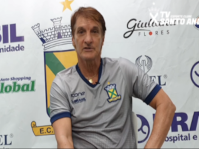

Santo André anuncia saída de José Carlos Palhavan
Santo André anunciou no início da noite desta segunda-feira, 16, que José Carlos Palhavan foi desligado do cargo de treinador do time, um dia após a derrota para o Oeste, por 2 a 0, em Barueri, pelo Campeonato Brasileiro da Série D. Em nota oficial publicada em suas redes, o Ramalhão confirmou a saída.
